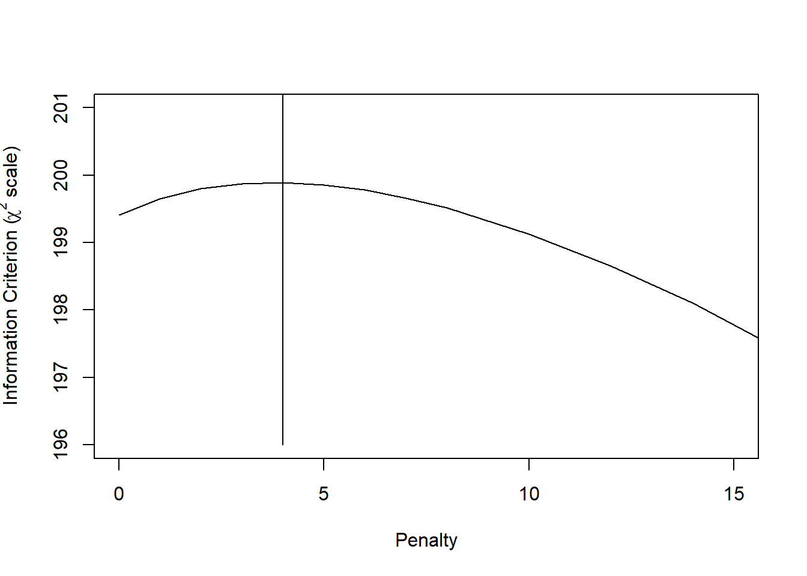
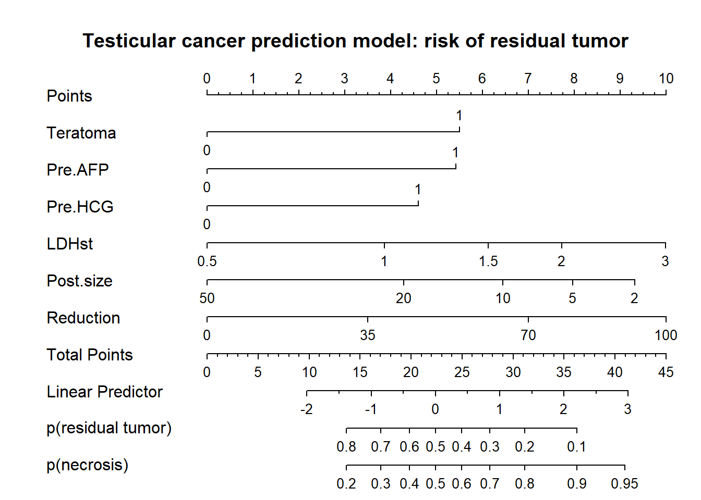
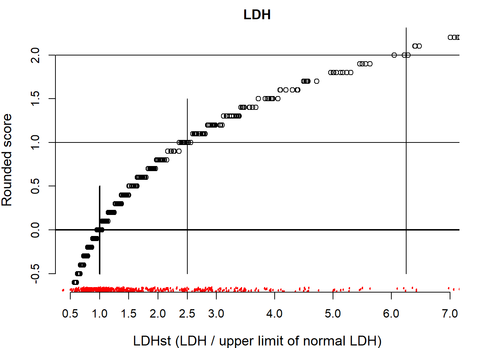
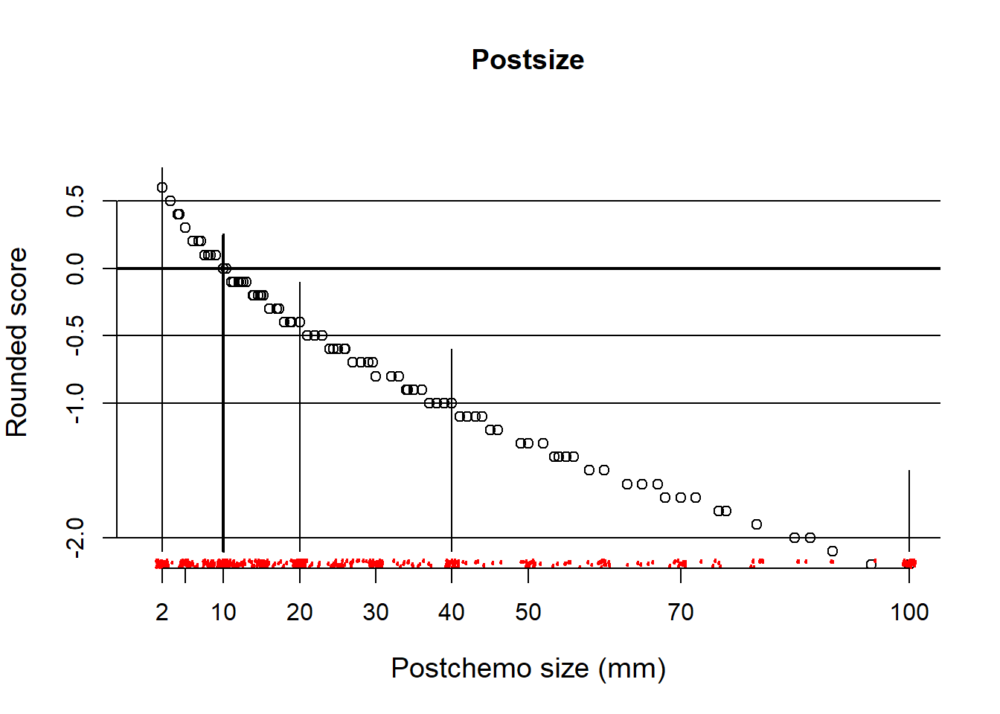
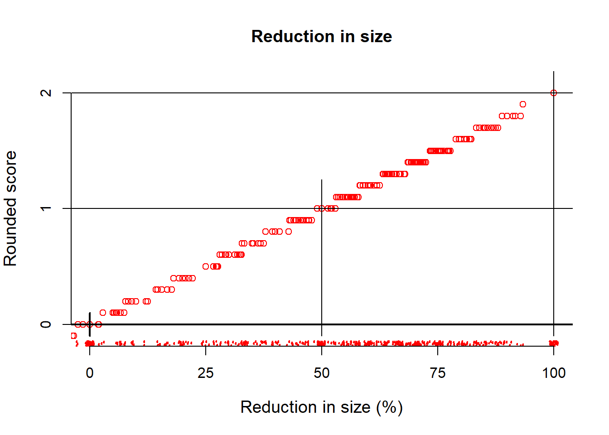
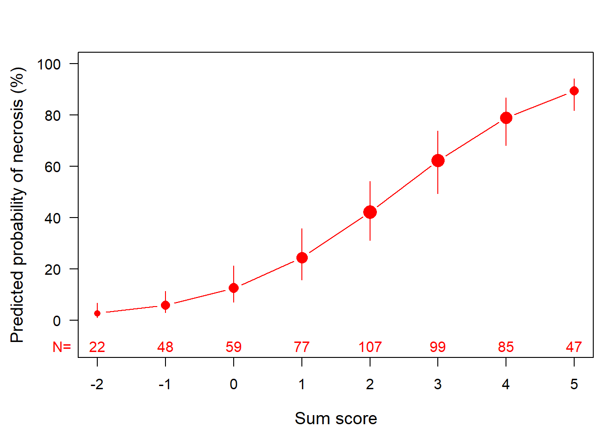
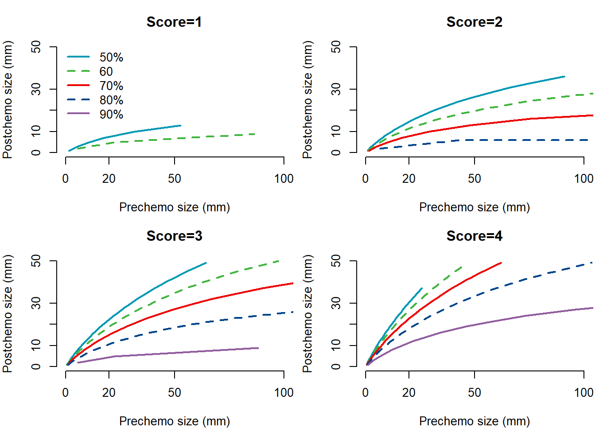
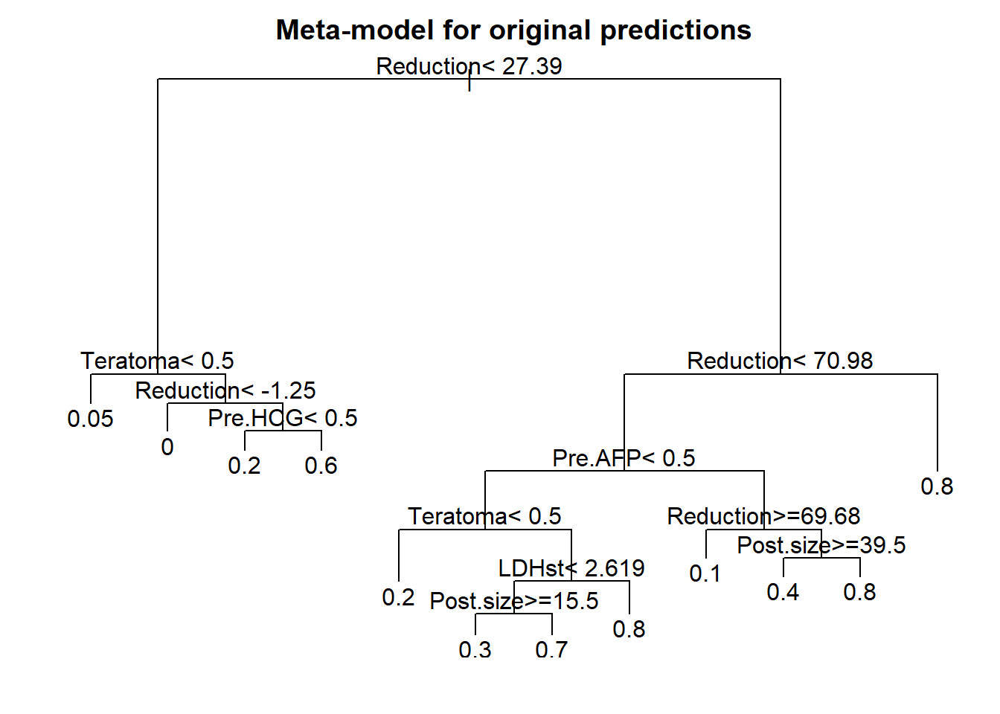
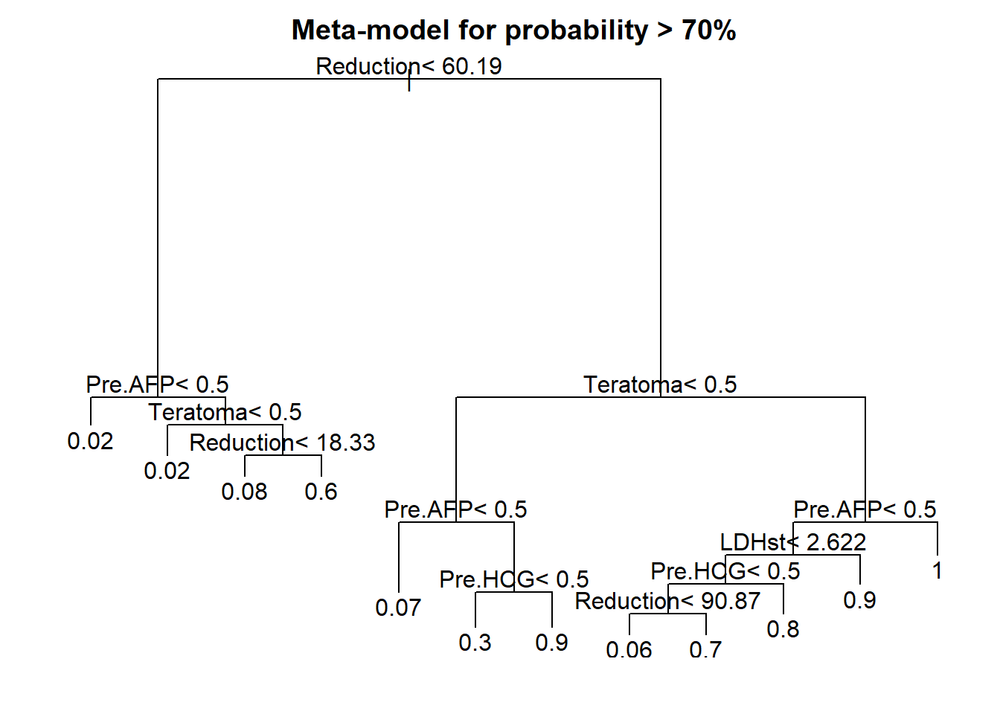
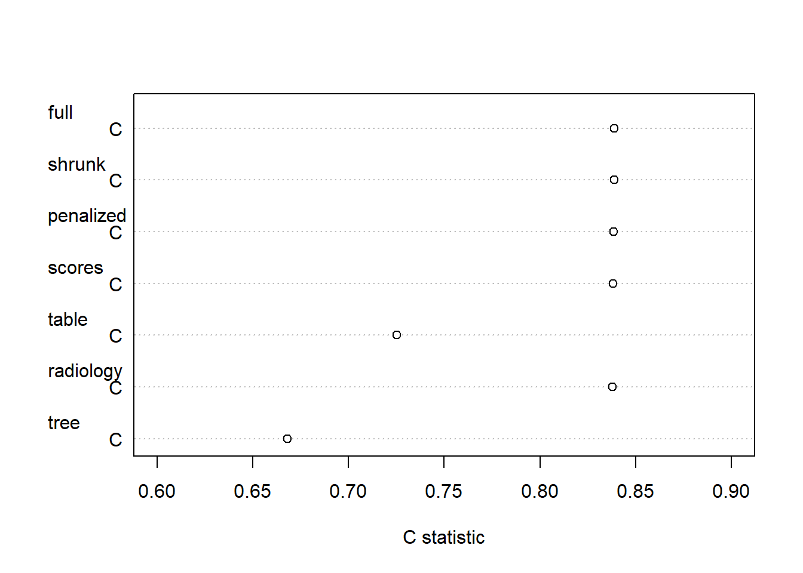

18 Presentation Formats
18.1 Fit logistic models in n544 data set; 6 predictors
We develop a prediction model with 6 predictors for presence of residual tumor in 544 men treated for metastatic nonseminomatous testicular cancer. Predictors were pre-specified based on review of the medical literature.
We first consider and full model and 2 shrinkage variants: uniform shrinkage and a penalized model.
We then study various formats for presentation of the prediction model for application in medical practice. The formats differ in user-friendliness and accuracy: for some simplifications we sacrifice nearly nothing and for other a lot in terms of c statistic. The formats are:
- nomogram (Fig 18.1)
- score chart (Table 18.2 and Fig 18.2)
- simple table (Table 18.3)
- iso-probability lines (Fig 18.3)
- tree on a meta-model (Fig 18.4)
# Fit a full 6 predictor model in n544
options(prType='html')
html(describe(n544), scroll=TRUE)11 Variables 544 Observations
Teratoma
| n | missing | distinct | Info | Sum | Mean | Gmd |
|---|---|---|---|---|---|---|
| 544 | 0 | 2 | 0.746 | 252 | 0.4632 | 0.4982 |
Pre.AFP
| n | missing | distinct | Info | Sum | Mean | Gmd |
|---|---|---|---|---|---|---|
| 544 | 0 | 2 | 0.675 | 186 | 0.3419 | 0.4508 |
Pre.HCG
| n | missing | distinct | Info | Sum | Mean | Gmd |
|---|---|---|---|---|---|---|
| 544 | 0 | 2 | 0.704 | 205 | 0.3768 | 0.4705 |
Pre.lnLDH

n missing distinct Info Mean Gmd .05 .10 .25
544 0 472 1 0.4582 0.7327 -0.38735 -0.26645 -0.03266
.50 .75 .90 .95
0.31299 0.92886 1.33528 1.65328
lowest : -1.066 -0.948 -0.767 -0.731 -0.565 , highest: 2.428 2.449 2.487 2.624 2.766 sqpost

| n | missing | distinct | Info | Mean | Gmd | .05 | .10 | .25 | .50 | .75 | .90 | .95 |
|---|---|---|---|---|---|---|---|---|---|---|---|---|
| 544 | 0 | 93 | 0.996 | 5.133 | 2.922 | 1.414 | 2.236 | 3.162 | 4.472 | 6.652 | 9.669 | 10.000 |
reduc10

| n | missing | distinct | Info | Mean | Gmd | .05 | .10 | .25 | .50 | .75 | .90 | .95 |
|---|---|---|---|---|---|---|---|---|---|---|---|---|
| 544 | 0 | 200 | 0.998 | 4.482 | 4.307 | -2.500 | 0.000 | 2.000 | 5.167 | 7.337 | 8.785 | 10.000 |
Necrosis
| n | missing | distinct | Info | Sum | Mean | Gmd |
|---|---|---|---|---|---|---|
| 544 | 0 | 2 | 0.743 | 245 | 0.4504 | 0.496 |
Tumor
| n | missing | distinct | Info | Sum | Mean | Gmd |
|---|---|---|---|---|---|---|
| 544 | 0 | 2 | 0.743 | 299 | 0.5496 | 0.496 |
Reduction

| n | missing | distinct | Info | Mean | Gmd | .05 | .10 | .25 | .50 | .75 | .90 | .95 |
|---|---|---|---|---|---|---|---|---|---|---|---|---|
| 544 | 0 | 200 | 0.998 | 44.82 | 43.07 | -25.00 | 0.00 | 20.00 | 51.67 | 73.37 | 87.85 | 100.00 |
LDHst

| n | missing | distinct | Info | Mean | Gmd | .05 | .10 | .25 | .50 | .75 | .90 | .95 |
|---|---|---|---|---|---|---|---|---|---|---|---|---|
| 544 | 0 | 472 | 1 | 2.03 | 1.605 | 0.6789 | 0.7661 | 0.9679 | 1.3675 | 2.5317 | 3.8014 | 5.2242 |
Post.size

| n | missing | distinct | Info | Mean | Gmd | .05 | .10 | .25 | .50 | .75 | .90 | .95 |
|---|---|---|---|---|---|---|---|---|---|---|---|---|
| 544 | 0 | 93 | 0.996 | 33.26 | 33.37 | 2.00 | 5.00 | 10.00 | 20.00 | 44.25 | 93.50 | 100.00 |
# Start the fitting of 3 models
set.seed(1)
full <- lrm(Necrosis ~ Teratoma+Pre.AFP+Pre.HCG+log(LDHst)+sqrt(Post.size)+Reduction,
data=n544,x=T,y=T,linear.predictors=T)
print(full)
lrm(formula = Necrosis ~ Teratoma + Pre.AFP + Pre.HCG + log(LDHst) +
sqrt(Post.size) + Reduction, data = n544, x = T, y = T, linear.predictors = T)
| Model Likelihood Ratio Test |
Discrimination Indexes |
Rank Discrim. Indexes |
|
|---|---|---|---|
| Obs 544 | LR χ2 211.56 | R2 0.431 | C 0.839 |
| 0 299 | d.f. 6 | R26,544 0.315 | Dxy 0.677 |
| 1 245 | Pr(>χ2) <0.0001 | R26,404 0.399 | γ 0.678 |
| max |∂log L/∂β| 1×10-7 | Brier 0.163 | τa 0.336 |
| β | S.E. | Wald Z | Pr(>|Z|) | |
|---|---|---|---|---|
| Intercept | -1.0425 | 0.6086 | -1.71 | 0.0867 |
| Teratoma | 0.9094 | 0.2140 | 4.25 | <0.0001 |
| Pre.AFP | 0.9025 | 0.2333 | 3.87 | 0.0001 |
| Pre.HCG | 0.7827 | 0.2305 | 3.40 | 0.0007 |
| LDHst | 0.9854 | 0.2089 | 4.72 | <0.0001 |
| Post.size | -0.2915 | 0.0815 | -3.58 | 0.0003 |
| Reduction | 0.0158 | 0.0052 | 3.04 | 0.0024 |
18.1.1 Internal validation by bootstrapping
## Validate model with bootstrapping
set.seed(1)
val.full <- validate(full, B=100)
val.full[1,c(1:3,5) ] <- val.full[1,c(1:3,5) ]/2 + 0.5 # transform Dxy to C
val.full[1,4 ] <- val.full[1,4]/2 # optimism in c
rownames(val.full)[1] <- "C"
kable(as.data.frame(val.full[1:4,]), digits=3) %>% kable_styling(full_width=F, position = "left")| index.orig | training | test | optimism | index.corrected | n | |
|---|---|---|---|---|---|---|
| C | 0.839 | 0.839 | 0.835 | 0.004 | 0.835 | 100 |
| R2 | 0.431 | 0.434 | 0.423 | 0.011 | 0.420 | 100 |
| Intercept | 0.000 | 0.000 | 0.000 | 0.000 | 0.000 | 100 |
| Slope | 1.000 | 1.000 | 0.978 | 0.022 | 0.978 | 100 |
So, limited optimism in c index (Dxy/2+0.5): 0.004.
And limited need for shrinkage, since the calibration slope is close to 1: 0.98.
For illustration, we consider 2 shrinkage approaches:
1. shrink coefficients with a uniform factor (from bootstrap validation (or by a heuristic formula as described by Copas 1983 and Van Houwelingen 1990 ).
2. penalize coefficients with a penalty factor as estimated by the optimal AIC in the pentrace function.
Empirical comparisons between shrinkage apporaches are here: Steyerberg 2000. A recent study compared the stability of shrinkage estimators: Van Calster 2020.
18.1.2 Shrunk model and penalization
# Apply linear shrinkage
full.shrunk <- full
full.shrunk$coef <- val.full[4,5] * full.shrunk$coef # use result from bootstrapping
# val.full[4,5] is shrinkage factor; heuristic estimate (LR - df) / LR = (211-6)/211=0.97
# Estimate new intercept, with shrunk lp as offset variable, i.e. coef fixed at unity
full.shrunk$coef[1] <- lrm.fit(y=full$y, offset= full$x %*% full.shrunk$coef[2:7])$coef[1]
# Make a penalized model with pentrace function
p <- pentrace(full, c(0,1,2,3,4,5,6,7,8,10,12,14,20))
plot(p, which='aic.c', xlim=c(0,15), ylim=c(196,201))
lines(x=c(4,4), y=c(196, 1000))
The optimal penalty factor is 4. Let’s update the full model fit with this penalty term.
18.1.3 Fit penalized model and compare fits
full.pen <- update(full, penalty=p$penalty)
## compare coefs of 3 model variants
fit.coefs <- cbind(full=full$coefficients, shrunk=full.shrunk$coef, penalized=full.pen$coefficients)
kable(as.data.frame(fit.coefs, digits=3)) %>% kable_styling(full_width=F, position = "left")| full | shrunk | penalized | |
|---|---|---|---|
| Intercept | -1.042 | -1.021 | -1.090 |
| Teratoma | 0.909 | 0.890 | 0.873 |
| Pre.AFP | 0.903 | 0.883 | 0.860 |
| Pre.HCG | 0.783 | 0.766 | 0.729 |
| LDHst | 0.985 | 0.964 | 0.884 |
| Post.size | -0.292 | -0.285 | -0.261 |
| Reduction | 0.016 | 0.015 | 0.016 |
Fig 18.1
18.1.4 Make nomogram from penalized model
par(mfrow=c(1,1), mar=c(1,1,4,.5))
# Need some stats for the data to plot nomogram
dd <- datadist(n544)
options(datadist="dd")
nom <- nomogram(full.pen, fun=c(function(x)(1-plogis(x)), plogis), lp=T,lp.at=c(-2,-1,0,1,2,3),
LDHst=c(.5,1,1.5,2,3), Post.size=c(50,20,10,5,2), Reduction=c(0,35,70,100),
fun.at=c(seq(.1,.9,by=.1),0.95),
funlabel=c("p(residual tumor)", "p(necrosis)"), vnames="lab", maxscale=10)
plot(nom)
title("Testicular cancer prediction model: risk of residual tumor")
So, we have a nice presentation that allows for assessing the relative importance of predictors (by length of the lines), and allows for precise estimates of risks of residual tumor (and its complement, necrosis, benign tissue).
Instruction to physicians using the model in their care:
Determine the patient’s value for each predictor, and draw a straight line upward to the points axis to determine how many points toward benign histology the patient receives. Sum the points received for each predictor and locate this sum on the total points axis. Draw a straight line down to find the patient’s predicted probability of residual tumor or necrosis (benign histology).
Instruction to patient: “Mr. X, if we had 100 men exactly like you, we would expect that the chemotherapy was fully successful in approximately <predicted probability from nomogram * 100>, as reflected in fully benign disease at surgical resection of your abdominal lymph nodes.” see Kattan et al.
Note that the number 100 may be debated, since the effective sample size for some covariate patterns may be far less.
18.1.5 Score chart creation with categorized and continuous predictors
We first search for some nice rounding of logistic regression coefficients. A classic approach is multiplying by 10. We find that multiplying by 10/8, or 1.25 works well.
We then continue with searching for a similarly nice scoring for continuous predictors. This is a trial and error process, supported by graphical illustrations.
18.1.6 Consider making rounded scores from penalized coefs
scores <- matrix(nrow=10, ncol=length(full.pen$coefficients),
dimnames = list(NULL, c("Multiplier", names(full.pen$coefficients[-1]))))
for (i in 1:10) {
scores[i,] <- c(10/i, round(full.pen$coefficients[-1] * 10 / i)) }
# consider a range of multipliers
kable(as.data.frame(scores, digits=3)) %>% kable_styling(full_width=F, position = "left")| Multiplier | Teratoma | Pre.AFP | Pre.HCG | LDHst | Post.size | Reduction |
|---|---|---|---|---|---|---|
| 10.00 | 9 | 9 | 7 | 9 | -3 | 0 |
| 5.00 | 4 | 4 | 4 | 4 | -1 | 0 |
| 3.33 | 3 | 3 | 2 | 3 | -1 | 0 |
| 2.50 | 2 | 2 | 2 | 2 | -1 | 0 |
| 2.00 | 2 | 2 | 1 | 2 | -1 | 0 |
| 1.67 | 1 | 1 | 1 | 1 | 0 | 0 |
| 1.43 | 1 | 1 | 1 | 1 | 0 | 0 |
| 1.25 | 1 | 1 | 1 | 1 | 0 | 0 |
| 1.11 | 1 | 1 | 1 | 1 | 0 | 0 |
| 1.00 | 1 | 1 | 1 | 1 | 0 | 0 |
# rounded scores
kable(as.data.frame(rbind(mult10=round(10*full.pen$coef[-1]),
mult1.25 =round(10/8*full.pen$coef[-1]))), digits=3) %>% kable_styling(full_width=F, position = "left")| Teratoma | Pre.AFP | Pre.HCG | LDHst | Post.size | Reduction | |
|---|---|---|---|---|---|---|
| mult10 | 9 | 9 | 7 | 9 | -3 | 0 |
| mult1.25 | 1 | 1 | 1 | 1 | 0 | 0 |
So, we like the multiplier of 10/8, or 1.25. Let’s search for the mapping of coefficients of continuous predictors on nice scores as well.
18.2 Scores for continuous predictors
18.2.1 LDH
Start with LDH, where we use the log scale for standardized LDH values. We could e.g. find: 1 point per ln, so 1 point per 2.7 times normal. We use a score of 10/8 for LDH in a plot. We add reference lines for point allocation.
par(mfrow=c(1,1), mar=c(4,4,2,2))
# Use score of 10/8 for LDH, plot score by LDHst
LDHplot <- as.data.frame(cbind(n544$LDHst, round(10/8*full.pen$coef[5]*n544$Pre.lnLDH,1)))
plot(x=LDHplot[,1], y=LDHplot[,2], xlab="LDHst (LDH / upper limit of normal LDH)", ylab="Rounded score",
axes=F, xlim=c(.5,6.9), ylim=c(-.6,2.2), cex.lab=1.2, main = "LDH")
scat1d(x=n544$LDHst, side=1, col="red", lwd=2)
axis(side=1, at=c(.5,1,1.5,2,2.5,3,4,5,6,7))
axis(side=2, at=c(-.5, 0,.5,1,1.5,2))
# horizontal reference lines
abline(a=0, b=0, lwd=2)
abline(a=1, b=0)
abline(a=2, b=0)
# vertical reference lines
lines(x=c(1,1), y=c(-.5, .5), lwd=2)
lines(x=c(2.5,2.5), y=c(-.5, 1.5))
lines(x=c(2.5^2,2.5^2), y=c(-.5, 2.5))
We find that a score of 1 corresponds to 2.5 times larger LDH values.
Continue with post.size.
18.2.2 Study scores for postchemotherapy size
# calculate score by sequence 2 to 100mm;
# 2 is minimum for analysis; set 10 to zero in sequence (sqrt(seq(2,50,by=1))-sqrt(10))
# We use 10mm as a reference, set to zero
Sizeplot <- as.data.frame(cbind(n544$Post.size,
round(10/8*full.pen$coef[6]*(sqrt(n544$Post.size) - sqrt(10)),1)), main = "Postchemotherapy size")
plot(x=Sizeplot[,1], y=Sizeplot[,2], xlab="Postchemo size (mm)", ylab="Rounded score",
axes=F, xlim=c(0,100), ylim=c(-2.1,1), cex.lab=1.2, main = "Postsize")
scat1d(x=n544$Post.size, side=1, col="red", lwd=2)
axis(side=1, at=c(2,5,10,20,30,40,50,70, 100))
axis(side=2, at=c(-2,-1,-.5,0,0.5))
# horizontal reference lines
abline(a=0, b=0, lwd=2)
abline(a=.5, b=0)
abline(a=-.5, b=0)
abline(a=-1, b=0)
abline(a=-2, b=0)
# vertical reference lines
lines(x=c(2,2), y=c(-2.1, .75))
lines(x=c(10,10), y=c(-2.1, 0.25), lwd=2)
lines(x=c(20,20), y=c(-2.1, -.1))
lines(x=c(40,40), y=c(-2.1, -0.6))
lines(x=c(100,100), y=c(-2.1, -1.5))
So, approximate scores for clinically meaningful sizes: 2 mm score +.5; 10mm, 0; 20mm, -.5; 40mm -1; 100 -2
Continue with Reduction. This should be simple, since Reduction was modelled as a linear variable, without transformations.
18.2.3 Study scores for reduction in size
Redplot <- as.data.frame(cbind(n544$Reduction,
round(10/8*full.pen$coef[7]*n544$Reduction,1)))
plot(x=Redplot[,1], y=Redplot[,2], xlab="Reduction in size (%)", ylab="Rounded score",
axes=F, xlim=c(0,100), ylim=c(-.1,2.1), cex.lab=1.2, col="red", main = "Reduction in size")
scat1d(x=n544$Reduction, side=1,col="red", lwd=2)
axis(side=1, at=c(0,25,50,75,100))
axis(side=2, at=c(0,1,2))
# horizontal reference lines
abline(a=0, b=0, lwd=2)
abline(a=1, b=0)
abline(a=2, b=0)
# vertical reference lines
lines(x=c(0,0), y=c(-.1, 0.1), lwd=2)
lines(x=c(50,50), y=c(-.1, 1.25))
lines(x=c(100,100), y=c(-.1, 2.5))
So, scores for reduction in size: 50%, score 1; 100%, score 2
We store the scores in new variables for later use in a logistic regression model, to check the impact of rounding on model performance.
# A score of 1 corresponds to 2.5 times larger LDH
# rescale such that exp(l) does get more than 1 point; 1 point at 2.5 times normal LDH
n544$LDHr <- round(n544$Pre.lnLDH*exp(1)/2.5,1)
# postsize: coef -.3 per sqrt(mm). Hence -1 with 3.3*sqrt(mm)
# So, approximate scores for clinically meaningful sizes:
# 2 mm score +.5; 10mm, 0; 20mm, -.5; 40mm -1; 100 -2
# change the intercept by defining score = 0 for 10 mm, which is clinically of most interest
n544$SQPOSTr <- round((n544$sqpost - sqrt(10)) / (sqrt(10) - sqrt(40)),1)
# Rescale reduction such that effect 1 point
# 50% reduction 1 point; i.e. 0% = 0; 50%=1; 100%=2
n544$REDUC5 <- round(n544$reduc10 / 5,1)Table 18.2
18.2.4 Make a score chart
Score chart to be made by hand, using the points as derived above.
Could also have kept life simpler by multiplying coefs by 10 and rounding.
score.fit <- lrm(Necrosis ~ Teratoma+Pre.AFP+Pre.HCG+LDHr+SQPOSTr+REDUC5,data=n544, x=T,y=T)
# scores <- as.data.frame(round(10/8*full.pen$coef[-1]))
kable(as.data.frame(10/8*score.fit$coef[-1]), digits=3) %>% kable_styling(full_width=F, position = "left")| 10/8 * score.fit$coef[-1] | |
|---|---|
| Teratoma | 1.134 |
| Pre.AFP | 1.137 |
| Pre.HCG | 0.964 |
| LDHr | 1.110 |
| SQPOSTr | 1.114 |
| REDUC5 | 1.008 |
#
# Continuous scores
LDHvalues <- c(0.6, 1, 1.6, 2.5, 4, 6)
kable(as.data.frame(rbind(LDH=LDHvalues, LDHscores=log(LDHvalues)*exp(1)/2.5)), digits = 2, col.names =NULL) %>% kable_styling(full_width=F, position = "left")| LDH | 0.60 | 1 | 1.60 | 2.5 | 4.00 | 6.00 |
| LDHscores | -0.56 | 0 | 0.51 | 1.0 | 1.51 | 1.95 |
Postvalues <- c(2,10,20,40,70)
kable(as.data.frame(rbind(Postsize=Postvalues,
Postscores=(sqrt(Postvalues) - sqrt(10)) / (sqrt(10) - sqrt(40)))),
digits = 2, col.names =NULL) %>% kable_styling(full_width=F, position = "left")| Postsize | 2.00 | 10 | 20.00 | 40 | 70.00 |
| Postscores | 0.55 | 0 | -0.41 | -1 | -1.65 |
Redvalues <- c(0,5,10)
kable(as.data.frame(rbind(Reduction=Redvalues,
Redscores=Redvalues / 5)),
digits = 2, col.names =NULL) %>% kable_styling(full_width=F, position = "left")| Reduction | 0 | 5 | 10 |
| Redscores | 0 | 1 | 2 |
So, we see that the continuous values of some predictors map to scores of approximately 0.5 or 1. Intermediate scores can be obtained by interpolation.
Fig 18.2
18.2.5 Translate score in probability estimates with 95% CI
##'# Function to relate scores to predictions in graph ###
make.score.matrix <-function(fit, scores, shrinkage=1, limits.scores=NULL) {
# lpscore for score chart + graph
fit <- update(fit, x=T,y=T, se.fit=T) # SE of predictions from original model
rounded.lp <- fit$x %*% scores # Linear predictor
multiplier <- lrm.fit(y=fit$y, x=rounded.lp)$coef[2] ## For score formula
shrunk.beta <- shrinkage * multiplier # Shrinkage built in
## Estimate intercept for scores, using the scores as offset with shrinkage
fit.lp <- lrm.fit(y=score.fit$y, offset=shrunk.beta*rounded.lp)
## lp formula; this version is not fully rounded yet
lp2 <- fit.lp$coef[1] + shrunk.beta*rounded.lp
cat("\nlinear predictor:", fit.lp$coef[1], "+", shrunk.beta, "* rounded.lp\n",
" original range of scores", min(rounded.lp), max(rounded.lp), "\n")
if (!is.null(limits.scores)) {
rounded.lp[rounded.lp < min(limits.scores)] <- min(limits.scores)
rounded.lp[rounded.lp > max(limits.scores)] <- max(limits.scores) }
cat("restricted range of scores", min(rounded.lp), max(rounded.lp), "\n")
## Data for graph
graph.lp <- cbind(rounded.lp, fit$se.fit) # lp and se.fit in matrix
lp.events <- tapply(fit$y,list(round(graph.lp[,1],0)),sum) # events per lp score
lp.nonevents <- tapply(1-fit$y,list(round(graph.lp[,1],0)),sum) # non-events per lp score
se.lp <- tapply(graph.lp[,2],list(round(graph.lp[,1],0)),mean) # mean se per lp score
lp.lp <- tapply(graph.lp[,1],list(round(graph.lp[,1],0)),mean) # mean lp per lp score
score <- lp.lp # range of score, rounded to 0 decimals
lp3 <- fit.lp$coef[1] + shrunk.beta*round(score,0) # lp on logistic scale, rounded
## data frame with predicted prob + 95% CI
p.lp <- as.data.frame(cbind(score=round(score,0),
p=plogis(lp3),plow=plogis(lp3-1.96*se.lp),phigh=plogis(lp3+1.96*se.lp),
lp.events,lp.nonevents))
p.lp$total <- p.lp$lp.events + p.lp$lp.nonevents
p.lp
}
## Make Fig 18.2 ##
## Continuous predictors in score
score.fit <- lrm(Necrosis ~ Teratoma+Pre.AFP+Pre.HCG+LDHr+SQPOSTr+REDUC5,data=n544, x=T,y=T)
scores <- rep(1,6) # All scores a weight of 1
lp.n544 <- make.score.matrix(fit=score.fit, scores=scores, shrinkage=0.95, limits.scores=c(-2,5))##
## linear predictor: -1.94 + 0.815 * rounded.lp
## original range of scores -4.3 6.7
## restricted range of scores -2 5kable(as.data.frame(lp.n544),
digits = 2) %>% kable_styling(full_width=F, position = "left")| score | p | plow | phigh | lp.events | lp.nonevents | total | |
|---|---|---|---|---|---|---|---|
| -2 | -2 | 0.03 | 0.01 | 0.07 | 0 | 22 | 22 |
| -1 | -1 | 0.06 | 0.03 | 0.11 | 2 | 46 | 48 |
| 0 | 0 | 0.13 | 0.07 | 0.21 | 6 | 53 | 59 |
| 1 | 1 | 0.24 | 0.16 | 0.36 | 19 | 58 | 77 |
| 2 | 2 | 0.42 | 0.31 | 0.54 | 48 | 59 | 107 |
| 3 | 3 | 0.62 | 0.49 | 0.74 | 62 | 37 | 99 |
| 4 | 4 | 0.79 | 0.68 | 0.87 | 66 | 19 | 85 |
| 5 | 5 | 0.89 | 0.82 | 0.94 | 42 | 5 | 47 |
par(mfrow=c(1,1),mar=c(4.5,4.5,3,1))
plot(x=lp.n544[,1], y=100*lp.n544[,2], lty = 1, las=1, type = "b", cex.lab=1.2,
ylab = "Predicted probability of necrosis (%)", ylim=c(-10,100),
xlab="Sum score", cex=sqrt(lp.n544$total)/5, xaxt="n", pch=16, col="red")
axis(side=1,at=lp.n544[,1], cex=1)
# add 95% CI
for (i in 1:nrow(lp.n544)) lines(x=c(lp.n544[i,1], lp.n544[i,1]), y=c(100*lp.n544[i,3], 100*lp.n544[i,4]), type="l", col="red")
# add N= ...
mtext("N=", side = 2, outer = FALSE, line=1.5, at = -10, adj = 0, las=1, cex=1, col="red")
text(x=lp.n544[,1],y=-10,labels=lp.n544$total, cex=1, col="red")
End Table 18.2 (score chart) and Fig 18.2 (graphic translation from score to probability)
18.2.6 Categorized coding
We can categorize the continuous predictors; a bad idea generally speaking
# LDH
n544$PRELDH <- ifelse(n544$Pre.lnLDH<log(1),0,1)
# PostSize simple coding: 0,1,2
n544$POST2 <- ifelse(n544$sqpost<sqrt(20),2,
ifelse(n544$sqpost<sqrt(50),1,0))
# Reduction in categories: increase=-1, 0-49%=0, >=50%=1
n544$REDUCr <- ifelse(n544$Reduction<0,-1, ifelse(n544$Reduction>=50,1,0))
## Everything coded in categories
score.fit2 <- lrm(Necrosis ~ Teratoma+Pre.AFP+Pre.HCG+PRELDH+POST2+REDUCr,data=n544, x=T,y=T)
kable(as.data.frame(x=10/8*score.fit2$coef[-1]), digits=2) %>% kable_styling(full_width=F, position = "left")| 10/8 * score.fit2$coef[-1] | |
|---|---|
| Teratoma | 1.15 |
| Pre.AFP | 1.08 |
| Pre.HCG | 0.83 |
| PRELDH | 1.13 |
| POST2 | 1.08 |
| REDUCr | 0.98 |
So, each category approx 1 point.
Table 18.3
18.2.7 Alternative: make a score from 0 - 5
Ultra simple scores
“.. categories of the predictors were simplified for practical application. We conclude that a simple statistical model, based on a limited number of patient characteristics, provides better guidelines for patient selection than those currently used in clinical practice. Br J Cancer 1996”
score5 <- n544$Teratoma+n544$Pre.AFP+n544$Pre.HCG+n544$PRELDH+n544$REDUCr
score5 <- ifelse(n544$REDUCr<0,0,score5)
n544$score5 <- score5
# Simple coding: 5 categories for postsize (no difference 20-30 and 30-50 mm)
POST5 <- ifelse(n544$sqpost<=sqrt(10),0,
ifelse(n544$sqpost<=sqrt(20),1,
ifelse(n544$sqpost<=sqrt(30),2,
ifelse(n544$sqpost<=sqrt(50),3,4))))
n544$POST5 <- as.factor(POST5) # add the post size categories as a factor
full.simple2 <- lrm(Necrosis~POST5+score5, data=n544, x=T,y=T,se.fit=T)
pred.simple2 <- aggregate(plogis(predict(full.simple2)), by=list(POST5, score5), FUN=mean)
pred.simple2 <- as.data.frame(with(pred.simple2,tapply(x,list(Group.1,Group.2),mean)))
kable(as.data.frame(pred.simple2), digits = 2) %>% kable_styling(full_width=F, position = "left")| 0 | 1 | 2 | 3 | 4 | 5 | |
|---|---|---|---|---|---|---|
| 0 | NA | 0.32 | 0.52 | 0.71 | 0.85 | 0.93 |
| 1 | 0.14 | 0.27 | 0.45 | 0.66 | 0.81 | 0.91 |
| 2 | 0.06 | 0.12 | 0.24 | 0.42 | 0.63 | 0.79 |
| 3 | 0.08 | 0.16 | 0.30 | 0.50 | 0.69 | NA |
| 4 | 0.04 | 0.09 | 0.19 | 0.35 | 0.55 | NA |
n544$POST5 <- as.numeric(n544$POST5)
# Make simple risk scores per category
n544$simple.cat <- ifelse(n544$POST5==3 & score5==4,70,
ifelse(n544$POST5==3 & score5==5,80,
ifelse(n544$POST5==2 & score5==3,60,
ifelse(n544$POST5==2 & score5==4,80,
ifelse(n544$POST5==2 & score5==5,90,
ifelse(n544$POST5<2 & score5==2,60,
ifelse(n544$POST5<2 & score5==3,70,
ifelse(n544$POST5<2 & score5==4,80,
ifelse(n544$POST5<2 & score5==5,90, 50)))))))))
simple.tab <- as.data.frame(with(n544,tapply(simple.cat,list(POST5=POST5,score=score5),mean)))
simple.tab[is.na(simple.tab)] <- 50
colnames(simple.tab) <- Cs(score.0, score.1, score.2, score.3, score.4, score.5)
rownames(simple.tab) <- Cs(size10, size20, size30, size50, size.gt.50)
simple.tab %>%
mutate(score.0 = cell_spec(score.0, "html", color = ifelse(score.0 > 50, "orange", "red")),
score.1 = cell_spec(score.1, "html", color = ifelse(score.1 > 50, "orange", "red")),
score.2 = cell_spec(score.2, "html", color = ifelse(score.2 > 50, "orange", "red")),
score.3 = cell_spec(score.3, "html", color = ifelse(score.3 == 70, "green",
ifelse(score.3 == 60, "orange","red"))),
score.4 = cell_spec(score.4, "html", color = ifelse(score.4 == 80, "white",
ifelse(score.4 == 70, "green",
ifelse(score.4 == 60, "orange","red"))),
background=ifelse(score.4 == 80, "green","white" )),
score.5 = cell_spec(score.5, "html", color = ifelse(score.5 >= 80, "white",
ifelse(score.5 == 70, "green",
ifelse(score.5 == 60, "orange","red"))),
background=ifelse(score.5 == 90, "darkgreen",
ifelse(score.5 == 80, "green","white" )))
) %>%
kable(format = "html", escape = F, row.names = T) %>% kable_styling(full_width=F, position = "left")| score.0 | score.1 | score.2 | score.3 | score.4 | score.5 | |
|---|---|---|---|---|---|---|
| size10 | 50 | 50 | 60 | 70 | 80 | 90 |
| size20 | 50 | 50 | 50 | 60 | 80 | 90 |
| size30 | 50 | 50 | 50 | 50 | 70 | 80 |
| size50 | 50 | 50 | 50 | 50 | 50 | 50 |
| size.gt.50 | 50 | 50 | 50 | 50 | 50 | 50 |
# kable(simple.tab, digits = 2) %>% kable_styling(full_width=F, position = "left") In this way we created a very simple table, with probability of necrosis according to post-chemotherapy mass size (rows) and a simple, categorized score of the other 5 predictors.
Fig 18.3
18.2.8 Iso-probability lines
For radiologists, it is natural to consider the pre-chemotherapy mass size and post-chemotherapy mass size. According to our analysis, the key information is the pre-chemotherapy size and the reduction in size. These pieces of information need to be considered jointly with the 4 other predictors (Teratoma, 3 tumor markers). We attempted to convey this message in iso-probability lines (Fig 18.3) Radiology
## Radiology paper: could graph pre - post with lines for score 1 - 4
score4 <- n544$Teratoma+n544$Pre.AFP+n544$Pre.HCG+n544$Pre.lnLDH
full.simple3 <- lrm(Necrosis ~ score4 + sqpost + reduc10, data=n544, x=T, y=T)
kable(as.data.frame(full.simple3$coef), digits = 2) %>% kable_styling(full_width=F, position = "left") | full.simple3$coef | |
|---|---|
| Intercept | -1.20 |
| score4 | 0.89 |
| sqpost | -0.27 |
| reduc10 | 0.17 |
# Make a presize variable, based on reduction and postsize
# reduc = (pre-post) / pre; reduc = 1 - post/pre; reduc-1 = -post/pre; pre = -post/(reduc-1)
n544$presize <- - n544$sqpost^2 / ifelse((n544$reduc10/10 - 1) != 0,(n544$reduc10/10 - 1),-.04)
# Now calculate iso probability lines: e.g. prob -70%,
# Calculate PRESIZE from SQPOST, for given probabilities
# presize = f(sqpost, plogis(full))
# pre = -post/(reduc10-10) # for reduc10<10
# range sqpost from 2 to 50; score 4 0 - 4
## Fig 18.3 ##
# matrix with sqpost and scores
x <- as.matrix(cbind(rep(sqrt(1:50),5),c(rep(0,50),rep(1,50),rep(2,50),rep(3,50),rep(4,50))))
# linear predictor from simple model 'full.simple3'
lp.simple3 <- x %*% full.simple3$coef[3:2] + full.simple3$coef[1]
# now calculate reduc10 with condition p=70% etc
# Solve equation qlogis(.7) = lp.simple3 + full.simple3$coef[4] * n544$REDUC10
reduc10.70 <- (qlogis(.7) - lp.simple3) /full.simple3$coef[4]
# Calculate presizes: pre = -post/(reduc10/10-1)
presize.70 <- - rep(1:50,5) / (reduc10.70/10-1)
# in 1 formula for efficiency
presize.90 <- - rep(1:50,5) / (((qlogis(.9) - lp.simple3) /(full.simple3$coef[4])/10) -1)
presize.80 <- - rep(1:50,5) / (((qlogis(.8) - lp.simple3) /(full.simple3$coef[4])/10) -1)
presize.60 <- - rep(1:50,5) / (((qlogis(.6) - lp.simple3) /(full.simple3$coef[4])/10) -1)
presize.50 <- - rep(1:50,5) / (((qlogis(.5) - lp.simple3) /(full.simple3$coef[4])/10) -1)
# make Postsize from sqpost
x[,1] <- x[,1]^2
# combine results
x <- as.matrix(cbind(x,lp.simple3,
reduc10.70, presize.70, presize.90,presize.80,presize.60,presize.50 ))
colnames(x) <- Cs(postsize, score4,lp,reduc1070,
presize70,presize90,presize80,presize60,presize50)
x <- as.data.frame(x)
x[x<0] <- NA
# Make some plots; isoprobability lines for different scores, x-axis=postsize
par(mfrow=c(2,2), mar=c(4,4,3,.5))
for (i in 1:4) {
xp = x[x$score4==i & !is.na(x$presize50) & x$presize50<100 & x$postsize<50, ]
xp = xp[sort(xp$presize50),]
plot(y=xp$postsize,x=xp$presize50, main=paste("Score=",i,sep=""),
ylab='Postchemo size (mm)', xlab="Prechemo size (mm)",
xlim=c(0,100), ylim=c(0,50),type="l", pch="5", axes=F,las=1, col=mycolors[5], lwd=2)
axis(side=2,at=c(0,10,20,30,50))
axis(side=1,at=c(0,20,50,100))
if (i==1) legend("topleft", lty=c(1,2,1,2,1), col=mycolors[c(5,4,2,3,6)], lwd=2,bty="n",
legend=c("50%", "60", "70%", "80%", "90%"))
xp = x[x$score4==i & !is.na(x$presize60), ]
xp = xp[sort(xp$presize60),]
lines(y=xp$postsize,x=xp$presize60, pch="6",lty=2, col=mycolors[4], lwd=2)
xp = x[x$score4==i & !is.na(x$presize70), ]
xp = xp[sort(xp$presize70),]
lines(y=xp$postsize,x=xp$presize70, pch="7",lty=1, col=mycolors[2], lwd=2)
xp = x[x$score4==i & !is.na(x$presize80), ]
xp = xp[sort(xp$presize80),]
lines(y=xp$postsize,x=xp$presize80, pch="8", lty=2, col=mycolors[3], lwd=2)
xp = x[x$score4==i & !is.na(x$presize90), ]
xp = xp[sort(xp$presize90),]
lines(y=xp$postsize,x=xp$presize90, pch="9", lty=1, col=mycolors[6], lwd=2)
} # end loop over score 1 - 4
So, we obtain some nice graphics. With score 0, men are at high risk of tumor. With score 4, even a relatively large post-chemotherapy mass size leads to high probabilities of necrosis, especially if the pre-chemotherapy mass was large.
Fig 18.4
18.2.9 Meta-model with tree presentation
We can present a decision rule for patients with testicular cancer, assuming a threshold of 70% for the probability of necrosis. If the probability is higher than 70%, this is a good prognosis group which could be spared surgery.
## Start with dichotomizing predictions from full as <70% vs >=70%
n544$predhigh <- ifelse(plogis(full$linear.predictor)<.7,0,1)
# Try to make tree model for this outcome
par(mfrow=c(1,1), mar=c(2,2,2,1))
tree.orig <- rpart(Necrosis ~ Teratoma+Pre.AFP+Pre.HCG+LDHst+Post.size+Reduction,
data=n544)
plot(tree.orig)
text(tree.orig, use.n=F)
title("Meta-model for original predictions")
tree.meta <- rpart(predhigh ~ Teratoma+Pre.AFP+Pre.HCG+LDHst+Post.size+Reduction,
data=n544)
plot(tree.meta)
text(tree.meta, use.n=F)
title("Meta-model for probability > 70%")
## Make smooth tree presentation; classification with reduction, teratoma, AFP
score3 <- as.numeric(n544$Reduction>70)+as.numeric(n544$Teratoma==1)+as.numeric(n544$Pre.AFP==1)
n544$tree.cat <- ifelse(n544$Reduction>50 & score3>=2,1,0)
tree.results <- as.data.frame(table(n544$tree.cat, n544$Necrosis))
colnames(tree.results) <- Cs("Risk group", Necrosis, N)
kable(tree.results, digits = 2) %>% kable_styling(full_width=F, position = "left") | Risk group | Necrosis | N |
|---|---|---|
| 0 | 0 | 264 |
| 1 | 0 | 35 |
| 0 | 1 | 134 |
| 1 | 1 | 111 |
end tree analysis
Apparent performance of penalized vs rescaled vs simplified models
What is the c statistic of various formats to predict necrosis at resection after chemotherapy? a) nomogram (Fig 18.1): original or penalized coefficients, negligable difference expected b) score chart (Table 18.2 and Fig 18.2): rounding, minor decline expected c) simple table (Table 18.3): categorization and simplification, much loss expected d) iso-probability lines (Fig 18.3): major predictors (size, reduction) kept continuous, some loss expected e) tree on a meta-model (Fig 18.4): ultra simple, major loss in performance expected
# 3 variants of full model fit
cstats <- cbind(
rcorr.cens(full$linear.predictor, n544$Necrosis)[1],
rcorr.cens(full.shrunk$linear.predictor, n544$Necrosis)[1],
rcorr.cens(full.pen$linear.predictor, n544$Necrosis)[1],
# rounding for score chart
rcorr.cens(score.fit$linear.predictor, n544$Necrosis)[1],
# simple table
rcorr.cens(n544$simple.cat, n544$Necrosis)[1],
# Radiology paper
rcorr.cens(full.simple3$linear.predictor, n544$Necrosis)[1],
# Tree
rcorr.cens(n544$tree.cat, n544$Necrosis)[1])
colnames(cstats) <- Cs(full, shrunk, penalized, scores, table, radiology, tree)
rownames(cstats) <- "C"
dotchart(cstats, xlab="C statistic", xlim=c(0.6,.9))
kable(as.data.frame(cstats), digits = 4) %>% kable_styling(full_width=F, position = "left") | full | shrunk | penalized | scores | table | radiology | tree | |
|---|---|---|---|---|---|---|---|
| C | 0.839 | 0.839 | 0.839 | 0.838 | 0.725 | 0.838 | 0.668 |
18.2.10 End comparisons of c statistics
As expected, the apparent performance of penalized vs rescaled models was very similar. Two formats led to a substantial loss in performance:
- simple table (Table 18.3): categorization and simplification, c=0.73 cp to c=0.84
- tree on a meta-model (Fig 18.4): ultra simple, c=0.67, for a single threshold to classify men as low risk and spare them resection.
Please use and improve the code above when desired. The major tools for presentation are:
1. The nomogram function: allows for scores with categorical and continuous predictors, with transformations.
2. The regression formula: can be implemented in wwww tools, including the Evidencio toolbox.